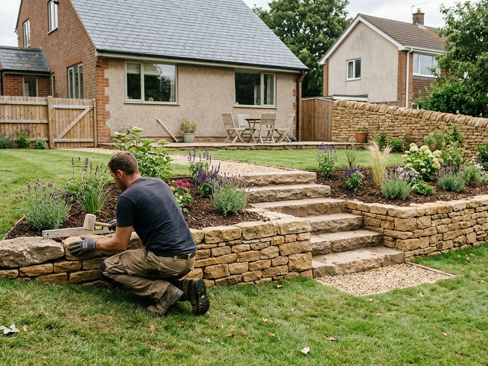
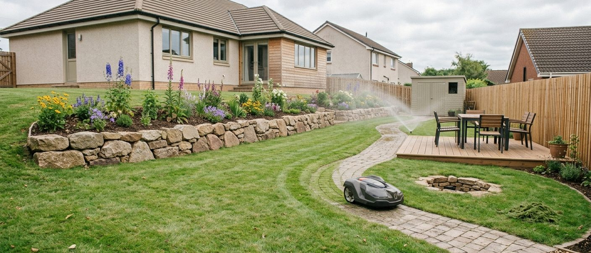

Aménagement paysager à Forges-les-Bains (91)
Aménagement paysager en Essonne
Entreprise d'aménagement paysager à Forges-les-Bains. Parlons de votre projet.



Nos prestations
Des aménagements pour vos espaces extérieurs
Un aperçu de ce que nous pouvons vous proposer, à préciser ensemble lors de l'établissement du devis.
- 01Détails →
Aménagement paysager
Un projet d'aménagement pour votre jardin ou vos abords, à définir ensemble.
- 02Détails →
Jardins et espaces verts
Création et aménagement d'espaces verts, selon vos envies et la configuration de votre terrain.
- 03Détails →
Aménagements extérieurs
Des aménagements autour de la maison, étudiés selon votre terrain.

À propos
Une entreprise de Forges-les-Bains
Jardi' Clean Création est une entreprise d'aménagement paysager basée à Forges-les-Bains, dans l'Essonne (91).
Appelez-nous pour présenter votre projet et demander un devis.
Contact
Un projet de jardin ? Parlons-en.
Appelez-nous ou écrivez-nous pour décrire votre projet et demander un devis.
06 62 00 53 19